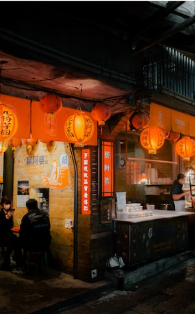
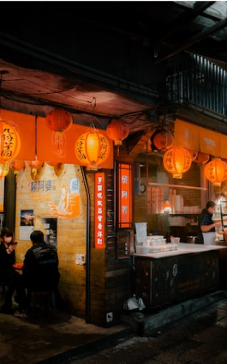

台北市は台湾の中心地です。活気にあふれる街台北では、さまざまな建物や台北を生きる人々の美しい風景を見ることができます。
Attraction 観光名所
九份

細い路地の階段に沿って建つ古い館に、提灯が灯るノスタルジックな風景。1989年、映画「非情城市」の舞台になったことをきっかけに再び注目を集めると共に、日本では、九份の町中にある建物が2001年公開の映画「千と千尋の神隠し」に登場する湯婆婆の湯屋を彷彿させるとして話題に。日本統治時代に建てられた古い建物が残ることから、どこか懐かしい雰囲気が漂う町並みは日本人の琴線に触れ、今や台湾で行きたい観光地ナンバーワンとなりました。
 

幻想的な夕暮れがねらい目
15:00～19:00
台北101

高さは509.2m、地上101階あるのが名前の由来です。エレベーターは東芝エレベータ製で、毎分1,010メートル（時速60.6キロメートル）の速さで上昇でき、地上1階から展望台のある89階（地上382.2メートル）まで39秒で到達します。展望台、オフィス、レストラン、ショッピングモールなどが入る台湾を代表するランドマークワーで、有名なカウントダウンパーティーをはじめ節目に合わせたライトアップも行っています。一度は行っておきたい名所です。
展望台営業時間帯
11:00～19:00
NightMarket 夜一
台北観光の夜の目玉と言えば、なんと言っても夜市（ナイトマーケット）があげられます。 毎日市内の各所で開かれており、夕方から夜遅くまで多くの人々で賑わっています。 絶品Ｂ級グルメ・小吃からファッション、ゲームまで様々なお店が集まっています。
Access 交通手段
各地へのアクセスにご利用ください
■地下鉄 (初乗り20元)
乗り方は日本の地下鉄とほぼ同じ。改札を通る時に、切符やICカードをタッチします。台北MRTは全て各駅停車です。
■バス (初乗り15元)
バス停には、ポールが立っており、大通りでは車道の真ん中のバスレーン沿いにあります。乗りたい場合、バスに向かって手を挙げて知らせます。運賃を現金で払う場合は、運転手に行先を告げてから運賃箱にお金を入れます。
■タクシー (初乗り70元)
市内の移動で気軽に使うことが出来ます。MRTなどが運行していない真夜中や早朝の移動にも便利です。新幹線の駅や有名観光地などにはタクシー乗り場が準備されているので、そこから乗りましょう。ホテルではフロントで呼んでもらうこともできます。
■悠遊カード (販売額100元)
現金をチャージして使うことが出来る交通系ICカードです。MRT・バス・台湾鉄路などで使用することができ、運賃が割引になります。台北旅行の際に手に入れておくと便利です。
寧夏夜市

寧夏路夜市は台湾伝統の屋台料理やB級グルメがメインの夜市です。特に大同区の圓環付近には懐かしいグルメがたくさん集まっているので、思う存分味わいましょう。また、ここの夜市は歩道と車道が分かれているので、食事やショッピングに便利です。食の夜市とも言われる寧夏路夜市には毎日、大勢の人々が訪れています。
営業時間：17:00 〜 25:00
銀河街観光夜一

饒河街観光夜市は、屋台料理から雑貨や生活用品も扱う夜市です。手ごろな値段が魅力的で、多くの人々で賑わいます。最も観光客に人気があるのは「藥燉排骨」「胡椒餅」「水煎包」。行列ができる程の人気料理です。他には「麻辣臭豆腐」「牛肉麵」「天婦羅」など台湾の伝統的な屋台料理も定番です。
営業時間：17:00 〜 23:00
通化夜市

台北の他の夜市と比べると小規模ではあるものの、食べ物においてはどの夜市にも決して劣りません。有名な駱記小炒（炒め物）、裕品元の氷火湯円、平価鉄板焼、通化夜市の揚げサツマイモボールは、ぜひとも賞味したい特色的な伝統軽食です。マッサージ店もたくさんあり、1日の終わりに最適な夜市です。
営業時間：17:00 〜 24:00